Biegi i jazdy z Apple Zdrowie
Cardio z dowolnej aplikacji pojawia się z mapą trasy, tempem i strefami tętna.
Trening siłowy na iPhone’a i Apple Watch
Zapisuj każdą serię w kilka sekund, śledź każdy rekord i pozwól trenerowi AI zaplanować twój tydzień. Z Replex trening zamienia się w postęp, który widać.
Zacznij za darmo. Pro dodaje Trenera AI, własne plany i pełną historię.
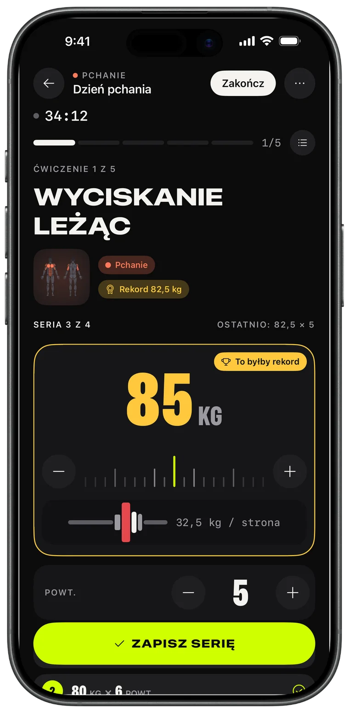
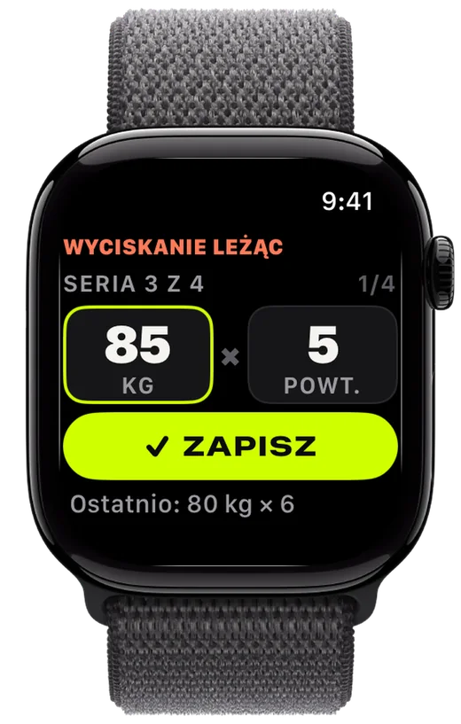
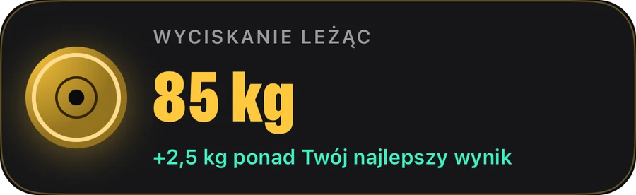
Zapisywanie
Ustaw talerze, zapisz serię, pobij poprzedni wynik. Replex pamięta, co podniosłeś, i szykuje kolejną serię, zanim będziesz gotowy.
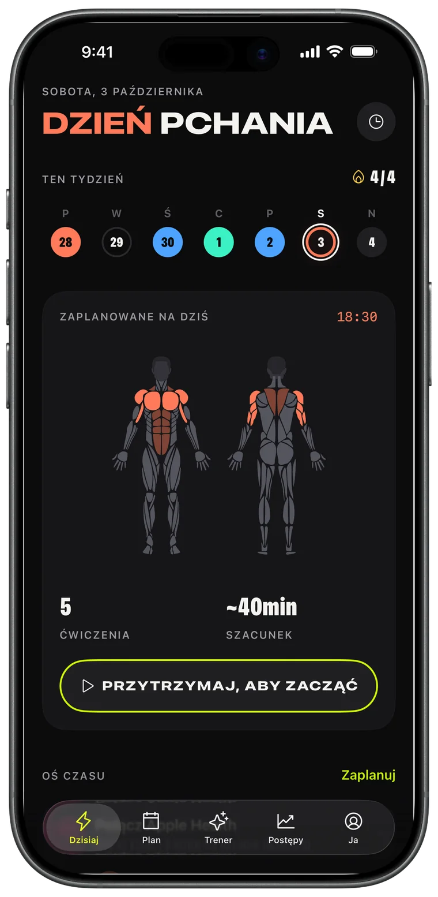
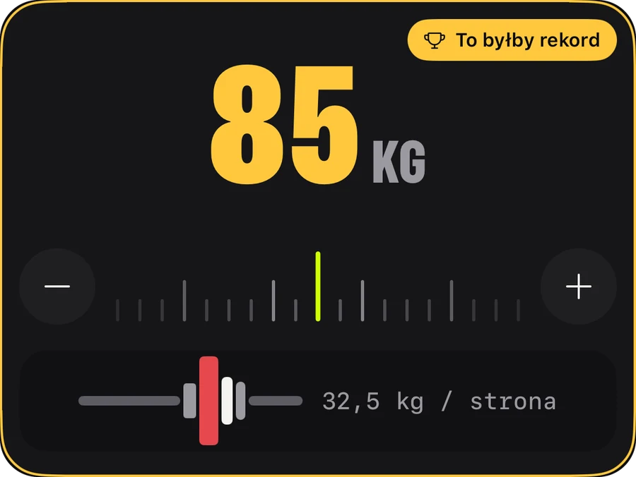
Apple Watch
Zostaw telefon w torbie. Obróć koronkę, by ustawić ciężar i powtórzenia, stuknij ZAPISZ, a iPhone zsynchronizuje się w czasie rzeczywistym.
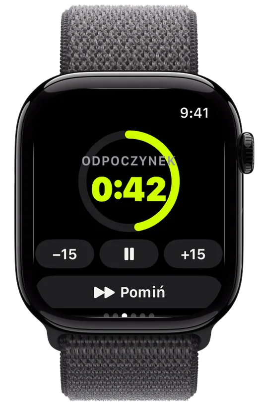
Postępy
Objętość, która rośnie tydzień po tygodniu, każdy twój rekord i trend każdego ćwiczenia – żebyś wiedział, że praca się opłaca.
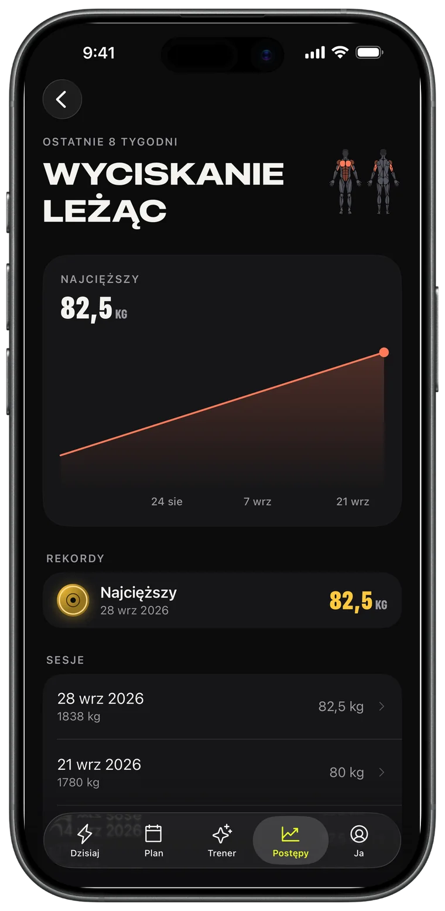
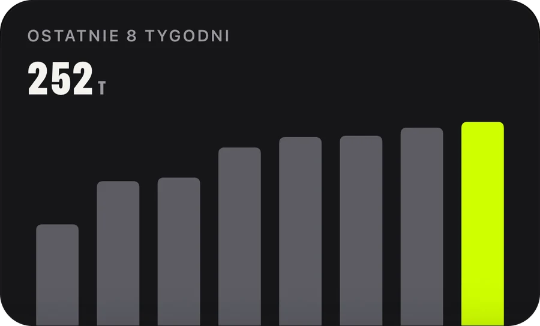
Trener AI · Pro
Poproś o tydzień, a trafi do kalendarza. Trener analizuje twoje prawdziwe treningi – sesje, rekordy, biegi – i planuje wokół nich.
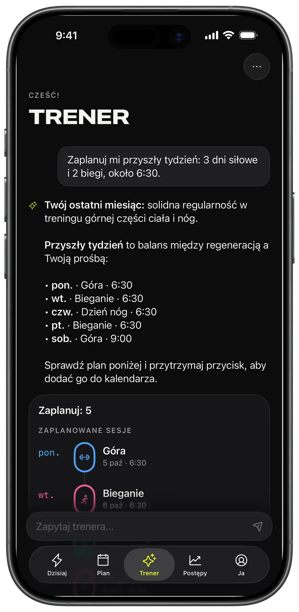
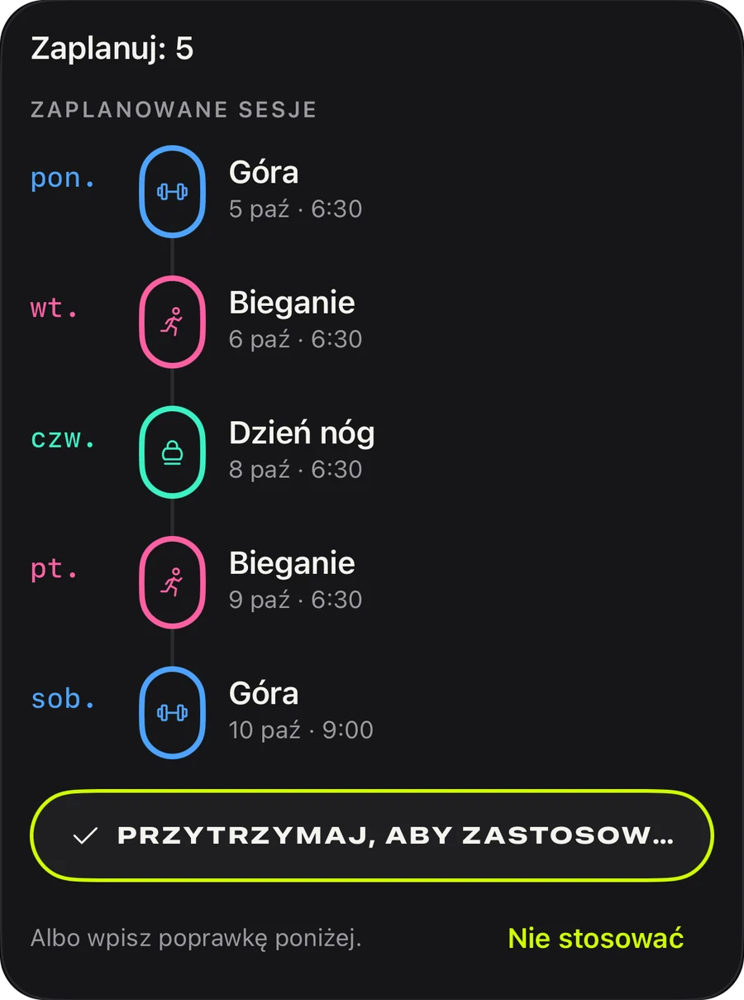
Plany
Push, pull, nogi, góra/dół, całe ciało: 44 gotowe plany na dziś albo własny plan, który będzie się powtarzał.
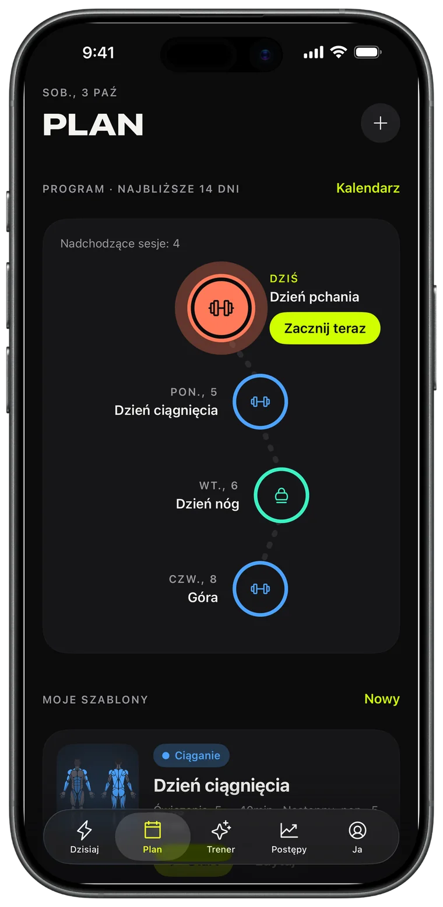
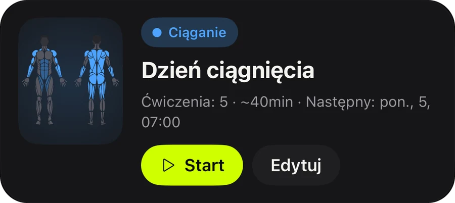
Udostępnianie
Każdy ukończony trening zamienia się w kartę do relacji z objętością, czasem i rekordami. Opublikuj ją albo zachowaj jako dowód.
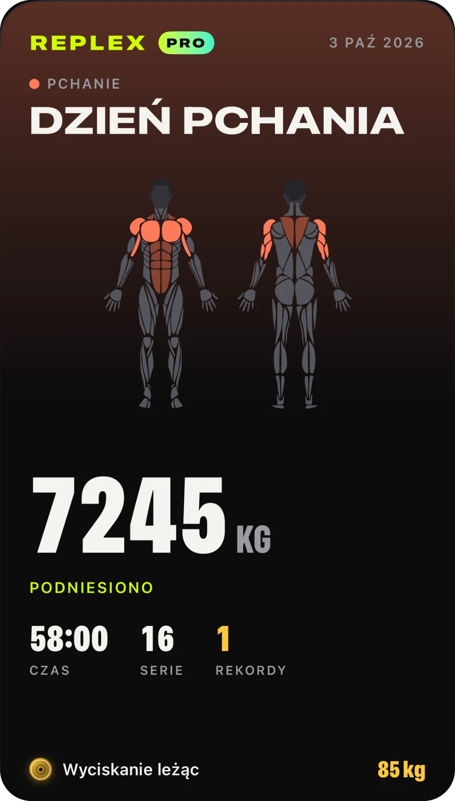
Cardio z dowolnej aplikacji pojawia się z mapą trasy, tempem i strefami tętna.
Twoja seria, przerwa i tętno na ekranie blokady i w Dynamic Island.
Treningi, szablony i plany na wszystkich twoich urządzeniach, tylko dla ciebie.
Zobacz, co trenuje sesja, zanim zaczniesz, i co już przepracowałeś w tym tygodniu.
Kilogramy, funty lub stony; ćwiczenia z masą ciała i na czas wbudowane.
Jasny lub ciemny motyw i trzy akcenty: Volt, Niebieski i Różowy, z pasującymi ikonami aplikacji.
Wszystko, czego potrzebujesz, by zapisywać i robić postępy.
Dla tych, którzy planują z wyprzedzeniem.
Pro jest dostępne w aplikacji w wersji miesięcznej, rocznej lub jako jednorazowy zakup dożywotni. Subskrypcję możesz anulować w każdej chwili na swoim koncie Apple.
Pobierz Replex i zapisz pierwszy trening w niecałą minutę.
Nie. Replex w pełni działa na iPhonie. Z Apple Watch możesz zapisywać serie, uruchamiać timer odpoczynku i śledzić tętno prosto z nadgarstka.
Tak. Z Replex możesz korzystać za darmo: zapisywanie, timer odpoczynku, 5 planów z masą ciała, rekordy z ostatnich sesji i 5 treningów na Apple Watch. Replex Pro – miesięcznie, rocznie lub jako jednorazowy zakup dożywotni – dodaje Trenera AI, wszystkie 44 plany, własne szablony i planowanie, pełną historię oraz nieograniczone treningi na Watch.
Na twoich urządzeniach i w twoim prywatnym iCloud. Treningi można też zapisywać w Apple Zdrowie. Trener AI widzi tylko to, czego potrzebuje do odpowiedzi, i tylko wtedy, gdy o coś zapytasz.
Kilogramów, funtów lub stonów, a kalkulator talerzy dostosowuje się do twojej jednostki.
54, w tym angielski, hiszpański, portugalski, francuski, niemiecki, japoński, koreański, chiński, arabski i hebrajski.